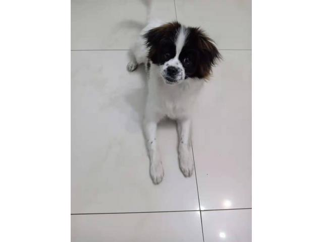

见证我和我的狗狗
在我还是个孩子的时候，我的父母就告诉我，有一天我会拥有属于我自己的狗狗。我兴奋不已，每天都在期待着那一天的到来。
终于，在我九岁生日的那一天，我的父母如约送我一只小狗。它是一只黑白相间的小拉布拉多，非常可爱。我给它取名叫“小白”。
小白刚来我家的时候，它还只是一个懵懂无知的小狗。我每天陪着它玩耍，教它如何握手、趴下、捡球等等。随着时间的推移，小白学会了越来越多的技能，也变得越来越聪明。
在我成长的过程中，小白一直是我最好的朋友和伙伴。无论我开心或不开心，它都会陪伴在我身边，轻轻摇着尾巴，给我带来无尽的温暖和安慰。
我还记得有一次我生病了，小白表现得非常担心，它一直在我身边摇着尾巴，不离不弃。这让我感到非常感动，也让我更加深刻地意识到，狗狗不仅仅是一只动物，更是我们生活中不可或缺的一部分。
随着时间的推移，小白渐渐变老了，它的毛发开始变白，体力也开始逐渐衰退。但我仍然深深地爱着它，每天都会陪伴它散步，给它喂食，照顾它的生活。
在我心中，小白不仅仅是一只狗狗，更是我生活中的一部分，是我成长过程中的见证者和伙伴。它教会了我责任感和关爱，也让我深刻地体会到了生命的可贵和珍贵。